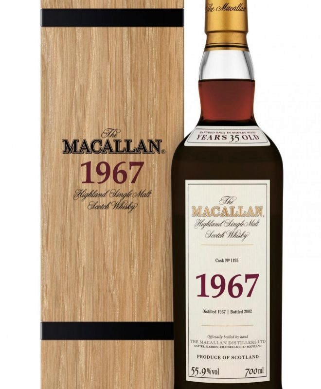
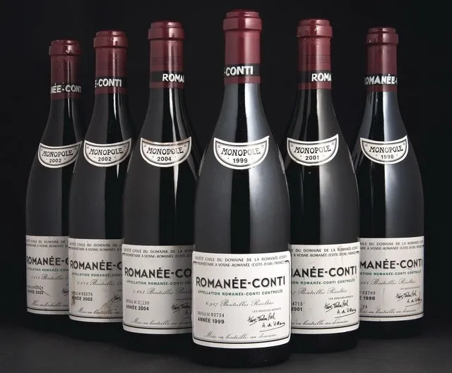
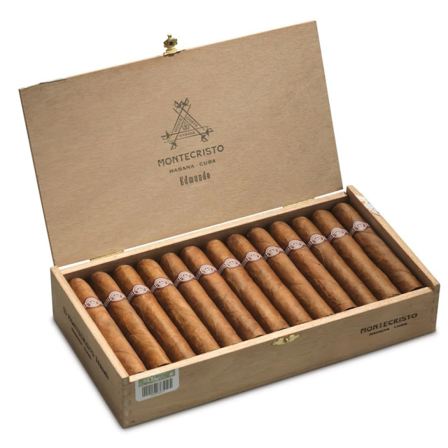
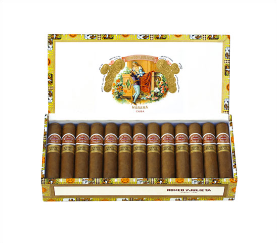

Luxury ©
The Macallan in Lalique Cire Perdue : solo existe una botella de 1.5 litros de este whisky añejado por 64 años. El recipiente fue elaborado por la cristalería francesa Lalique para conmemorar el 150 aniversario de su creador. El precio de subasta alcanzó los 460 mil dolares.
Dalmore 64 Trinitas : solo existen tres botellas de esta bebida que fue madurada por al menos 140 años. Cada una de ellas fue adquirida por más de 160 mil dolares.
Egon Muller Scharzhofberger Riesling Trockenbeerenauslese : vino blanco elaborado por Egon Muller, en el famoso viñedo Scharzhofberg, dentro de la amplia región de Mosela, conocida por sus intensos vinos de la variedad riesling. Este Trockenbeerenauslese es un vino dulce y concentrado, vinificado a partir de una estricta selección de uvas totalmente pasificadas y deshidratadas por podredumbre de botrytis, y su producción se limita a unos cientos de botellas. Precio Medio – Euros: 9.017 € – USD: $10,641
Domaine de la Romanée-Conti Grand Cru, Côte de Nuits : Nace de un viñedo de 1,8 hectáreas con viñas de 60 años de edad y se elaboran un promedio de 5.500 botellas por cosecha. Su precio medio es de casi 16.600 $, aunque su cotización máxima ha llegado a los 87.500 $. Muchos consideran que el clásico vino de Vosne-Romanée elaborado con pinot noir tiene el equilibrio perfecto de peso, estructura, elegancia y longevidad. Las notas de cata a menudo se refieren a una combinación de frutas rojas ácidas (particularmente cerezas y frambuesas) y elementos más oscuros de sotobosque, regaliz y humo. Precio Medio – Euros: 13.526 € – USD: $15.961
Montecristo Edmundo : Magnifica proporción entre su longitud y cepo de esta vitola, que en galera lleva el mismo nombre, con un estupendo recorrido a lo largo de la combustión, lleno de matices y una fortaleza que se caracteriza por ser de media a alta, sabroso y con algunas puntas terrosas y con una característica bien delineada en el balance de sabores y aromas.
Romeo y Julieta Petit Churchills : Con una fortaleza media/alta (tres sobre cinco) este pequeño formato nos ofrece un magnifico equilibrio de sabores y aromas de principio a fin de la degustación y una estupenda proporción entre su longitud y su cepo, con algunas puntas picantes muy ligeras de pimienta blanca y tostados.
